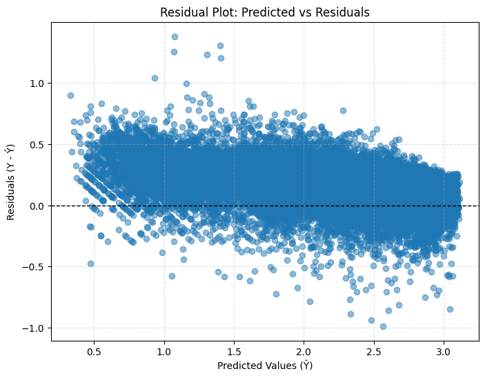

import pandas as pd
import numpy as np
from sklearn.preprocessing import MinMaxScaler
import tensorflow as tf
from tensorflow.keras import layers, models, callbacks
df = pd.read_csv("https://raw.githubusercontent.com/byui-cse/cse450-course/master/data/bikes.csv")
df_dec = pd.read_csv("https://raw.githubusercontent.com/byui-cse/cse450-course/master/data/bikes_december.csv")# Parse date
df["dteday"] = pd.to_datetime(df["dteday"])
df_dec["dteday"] = pd.to_datetime(df_dec["dteday"])
# Target: total bikes
df["total_bikes"] = df["casual"] + df["registered"]
# Create date parts + cyclical encodings for BOTH datasets
for frame in [df, df_dec]:
# Calendar parts
frame["dayofweek"] = frame["dteday"].dt.dayofweek # 0=Mon,...,6=Sun
frame["month"] = frame["dteday"].dt.month # 1–12
# Cyclical for hour of day (0–23)
frame["hr_sin"] = np.sin(2 * np.pi * frame["hr"] / 24)
frame["hr_cos"] = np.cos(2 * np.pi * frame["hr"] / 24)
# Cyclical for day of week (0–6)
frame["dow_sin"] = np.sin(2 * np.pi * frame["dayofweek"] / 7)
frame["dow_cos"] = np.cos(2 * np.pi * frame["dayofweek"] / 7)
# Cyclical for month (1–12 → shift to 0–11)
frame["month_sin"] = np.sin(2 * np.pi * (frame["month"] - 1) / 12)
frame["month_cos"] = np.cos(2 * np.pi * (frame["month"] - 1) / 12)
# Base features:
# numeric (incl. cyclical) + small categoricals (season, weathersit)
base_features = [
"holiday",
"workingday",
"temp_c",
"feels_like_c",
"hum",
"windspeed",
"hr_sin", "hr_cos",
"dow_sin", "dow_cos",
"month_sin", "month_cos",
"season",
"weathersit"
]cat_cols = ["season", "weathersit"]
num_cols = [
"holiday",
"workingday",
"temp_c",
"feels_like_c",
"hum",
"windspeed",
"hr_sin", "hr_cos",
"dow_sin", "dow_cos",
"month_sin", "month_cos"
]
# Training features/target
X = df[base_features].copy()
y = df["total_bikes"].values
# One-hot encode season & weathersit
X = pd.get_dummies(X, columns=cat_cols, drop_first=False)
# Save final column layout
feature_cols_final = X.columns.tolist()
# December features with same structure
X_dec = df_dec[base_features].copy()
X_dec = pd.get_dummies(X_dec, columns=cat_cols, drop_first=False)
X_dec = X_dec.reindex(columns=feature_cols_final, fill_value=0)
# Sort df by date and hour to respect time order
df_sorted_idx = df.sort_values(["dteday", "hr"]).index
# Apply this order to X_scaled and y
X_sorted = X_scaled[df_sorted_idx]
y_sorted = y[df_sorted_idx]
# 80% train, 20% validation
train_size = int(len(df) * 0.8)
X_train = X_sorted[:train_size]
y_train = y_sorted[:train_size]
X_val = X_sorted[train_size:]
y_val = y_sorted[train_size:]
print("Train shape:", X_train.shape)
print("Validation shape:", X_val.shape)Train shape: (89980, 20)
Validation shape: (22495, 20)input_dim = X_train.shape[1]
model = models.Sequential([
layers.Input(shape=(input_dim,)),
layers.Dense(512, activation="swish"),
layers.Dense(512, activation="swish"),
layers.Dense(256, activation="swish"),
layers.Dense(128, activation="swish"),
layers.Dense(1, activation="softplus") # regression output
])
model.compile(
optimizer=tf.keras.optimizers.AdamW(learning_rate=1e-4),
loss="mse",
metrics=["mae"]
)
model.summary()Model: "sequential_6"
┏━━━━━━━━━━━━━━━━━━━━━━━━━━━━━━━━━┳━━━━━━━━━━━━━━━━━━━━━━━━┳━━━━━━━━━━━━━━━┓ ┃ Layer (type) ┃ Output Shape ┃ Param # ┃ ┡━━━━━━━━━━━━━━━━━━━━━━━━━━━━━━━━━╇━━━━━━━━━━━━━━━━━━━━━━━━╇━━━━━━━━━━━━━━━┩ │ dense_30 (Dense) │ (None, 512) │ 10,752 │ ├─────────────────────────────────┼────────────────────────┼───────────────┤ │ dense_31 (Dense) │ (None, 512) │ 262,656 │ ├─────────────────────────────────┼────────────────────────┼───────────────┤ │ dense_32 (Dense) │ (None, 256) │ 131,328 │ ├─────────────────────────────────┼────────────────────────┼───────────────┤ │ dense_33 (Dense) │ (None, 128) │ 32,896 │ ├─────────────────────────────────┼────────────────────────┼───────────────┤ │ dense_34 (Dense) │ (None, 1) │ 129 │ └─────────────────────────────────┴────────────────────────┴───────────────┘
Total params: 437,761 (1.67 MB)
Trainable params: 437,761 (1.67 MB)
Non-trainable params: 0 (0.00 B)
early_stop = callbacks.EarlyStopping(
monitor="val_loss",
patience=15,
restore_best_weights=True
)
reduce_lr = callbacks.ReduceLROnPlateau(
monitor="val_loss",
factor=0.5,
patience=3,
min_lr=1e-5
)history = model.fit(
X_train, y_train,
validation_data=(X_val, y_val),
epochs=100,
batch_size=64,
callbacks=[early_stop, reduce_lr],
verbose=1
)Epoch 1/100 1406/1406 ━━━━━━━━━━━━━━━━━━━━ 7s 4ms/step - loss: 0.1969 - mae: 0.3081 - val_loss: 0.0613 - val_mae: 0.2009 - learning_rate: 0.0010 Epoch 2/100 1406/1406 ━━━━━━━━━━━━━━━━━━━━ 4s 3ms/step - loss: 0.0662 - mae: 0.1891 - val_loss: 0.0529 - val_mae: 0.1866 - learning_rate: 0.0010 Epoch 3/100 1406/1406 ━━━━━━━━━━━━━━━━━━━━ 4s 3ms/step - loss: 0.0623 - mae: 0.1836 - val_loss: 0.0529 - val_mae: 0.1882 - learning_rate: 0.0010 Epoch 4/100 1406/1406 ━━━━━━━━━━━━━━━━━━━━ 4s 3ms/step - loss: 0.0596 - mae: 0.1781 - val_loss: 0.0813 - val_mae: 0.2457 - learning_rate: 0.0010 Epoch 5/100 1406/1406 ━━━━━━━━━━━━━━━━━━━━ 4s 3ms/step - loss: 0.0568 - mae: 0.1745 - val_loss: 0.0563 - val_mae: 0.1939 - learning_rate: 0.0010 Epoch 6/100 1406/1406 ━━━━━━━━━━━━━━━━━━━━ 4s 3ms/step - loss: 0.0535 - mae: 0.1687 - val_loss: 0.0650 - val_mae: 0.2125 - learning_rate: 5.0000e-04 Epoch 7/100 1406/1406 ━━━━━━━━━━━━━━━━━━━━ 4s 3ms/step - loss: 0.0532 - mae: 0.1683 - val_loss: 0.0566 - val_mae: 0.1946 - learning_rate: 5.0000e-04 Epoch 8/100 1406/1406 ━━━━━━━━━━━━━━━━━━━━ 5s 3ms/step - loss: 0.0522 - mae: 0.1664 - val_loss: 0.0489 - val_mae: 0.1777 - learning_rate: 5.0000e-04 Epoch 9/100 1406/1406 ━━━━━━━━━━━━━━━━━━━━ 4s 3ms/step - loss: 0.0529 - mae: 0.1676 - val_loss: 0.0521 - val_mae: 0.1832 - learning_rate: 5.0000e-04 Epoch 10/100 1406/1406 ━━━━━━━━━━━━━━━━━━━━ 5s 3ms/step - loss: 0.0526 - mae: 0.1663 - val_loss: 0.0546 - val_mae: 0.1902 - learning_rate: 5.0000e-04 Epoch 11/100 1406/1406 ━━━━━━━━━━━━━━━━━━━━ 5s 3ms/step - loss: 0.0525 - mae: 0.1663 - val_loss: 0.0507 - val_mae: 0.1832 - learning_rate: 5.0000e-04 Epoch 12/100 1406/1406 ━━━━━━━━━━━━━━━━━━━━ 4s 3ms/step - loss: 0.0494 - mae: 0.1621 - val_loss: 0.0645 - val_mae: 0.2123 - learning_rate: 2.5000e-04 Epoch 13/100 1406/1406 ━━━━━━━━━━━━━━━━━━━━ 4s 3ms/step - loss: 0.0502 - mae: 0.1628 - val_loss: 0.0636 - val_mae: 0.2113 - learning_rate: 2.5000e-04 Epoch 14/100 1406/1406 ━━━━━━━━━━━━━━━━━━━━ 6s 4ms/step - loss: 0.0494 - mae: 0.1610 - val_loss: 0.0514 - val_mae: 0.1886 - learning_rate: 2.5000e-04 Epoch 15/100 1406/1406 ━━━━━━━━━━━━━━━━━━━━ 4s 3ms/step - loss: 0.0485 - mae: 0.1595 - val_loss: 0.0570 - val_mae: 0.1961 - learning_rate: 1.2500e-04 Epoch 16/100 1406/1406 ━━━━━━━━━━━━━━━━━━━━ 4s 3ms/step - loss: 0.0478 - mae: 0.1590 - val_loss: 0.0521 - val_mae: 0.1863 - learning_rate: 1.2500e-04 Epoch 17/100 1406/1406 ━━━━━━━━━━━━━━━━━━━━ 4s 3ms/step - loss: 0.0480 - mae: 0.1589 - val_loss: 0.0545 - val_mae: 0.1930 - learning_rate: 1.2500e-04 Epoch 18/100 1406/1406 ━━━━━━━━━━━━━━━━━━━━ 5s 4ms/step - loss: 0.0477 - mae: 0.1584 - val_loss: 0.0510 - val_mae: 0.1847 - learning_rate: 6.2500e-05 Epoch 19/100 1406/1406 ━━━━━━━━━━━━━━━━━━━━ 5s 4ms/step - loss: 0.0469 - mae: 0.1567 - val_loss: 0.0557 - val_mae: 0.1957 - learning_rate: 6.2500e-05 Epoch 20/100 1406/1406 ━━━━━━━━━━━━━━━━━━━━ 4s 3ms/step - loss: 0.0470 - mae: 0.1574 - val_loss: 0.0565 - val_mae: 0.1983 - learning_rate: 6.2500e-05 Epoch 21/100 1406/1406 ━━━━━━━━━━━━━━━━━━━━ 4s 3ms/step - loss: 0.0464 - mae: 0.1568 - val_loss: 0.0535 - val_mae: 0.1906 - learning_rate: 3.1250e-05 Epoch 22/100 1406/1406 ━━━━━━━━━━━━━━━━━━━━ 5s 3ms/step - loss: 0.0453 - mae: 0.1555 - val_loss: 0.0540 - val_mae: 0.1914 - learning_rate: 3.1250e-05 Epoch 23/100 1406/1406 ━━━━━━━━━━━━━━━━━━━━ 4s 3ms/step - loss: 0.0471 - mae: 0.1571 - val_loss: 0.0528 - val_mae: 0.1886 - learning_rate: 3.1250e-05
# Predict on validation set
y_val_pred = model.predict(X_val).flatten()
# Compute MSE and MAE from Keras
val_loss, val_mae = model.evaluate(X_val, y_val, verbose=0)
# RMSE
rmse = np.sqrt(val_loss)
# R-squared
ss_res = np.sum((y_val - y_val_pred) ** 2)
ss_tot = np.sum((y_val - np.mean(y_val)) ** 2)
r2 = 1 - (ss_res / ss_tot)
print(f"Validation MSE : {val_loss:.2f}")
print(f"Validation RMSE: {rmse:.2f}")
print(f"Validation MAE : {val_mae:.2f}")
print(f"Validation R² : {r2:.4f}")
703/703 ━━━━━━━━━━━━━━━━━━━━ 1s 2ms/step Validation MSE : 0.05 Validation RMSE: 0.22 Validation MAE : 0.18 Validation R² : 0.8611
import matplotlib.pyplot as plt
# Residuals
residuals = y_val - y_val_pred
plt.figure(figsize=(8,6))
plt.scatter(y_val_pred, residuals, alpha=0.5)
# Reference line at 0
plt.axhline(0, color="black", linestyle="--", linewidth=1)
plt.xlabel("Predicted Values (Ŷ)")
plt.ylabel("Residuals (Y - Ŷ)")
plt.title("Residual Plot: Predicted vs Residuals")
plt.grid(True, linestyle="--", alpha=0.4)
plt.show()
y_val_pred_original = (10 ** y_val_pred) - 1
y_val_pred_originalarray([ 424.61682, 598.24585, 1081.9415 , ..., 227.90002, 168.65134,
81.66906], dtype=float32)# Predict (model outputs log10(total_bikes + 1))
y_dec_pred_log = model.predict(X_dec_scaled).flatten()
# Undo the log transformation: original = (10^log) - 1
y_dec_pred = (10 ** y_dec_pred_log) - 1
# Prevent any negative float noise
y_dec_pred = np.clip(y_dec_pred, 0, None)
# Round to integer bike counts
y_dec_pred = np.round(y_dec_pred).astype(int)
# Save to CSV (use the column name your instructor expects)
preds_df = pd.DataFrame({
"total_bikes": y_dec_pred
})
preds_df.to_csv("bikes_december_predictions.csv", index=False)
print("Saved predictions to bikes_december_predictions.csv")46/46 ━━━━━━━━━━━━━━━━━━━━ 0s 9ms/step Saved predictions to bikes_december_predictions.csv